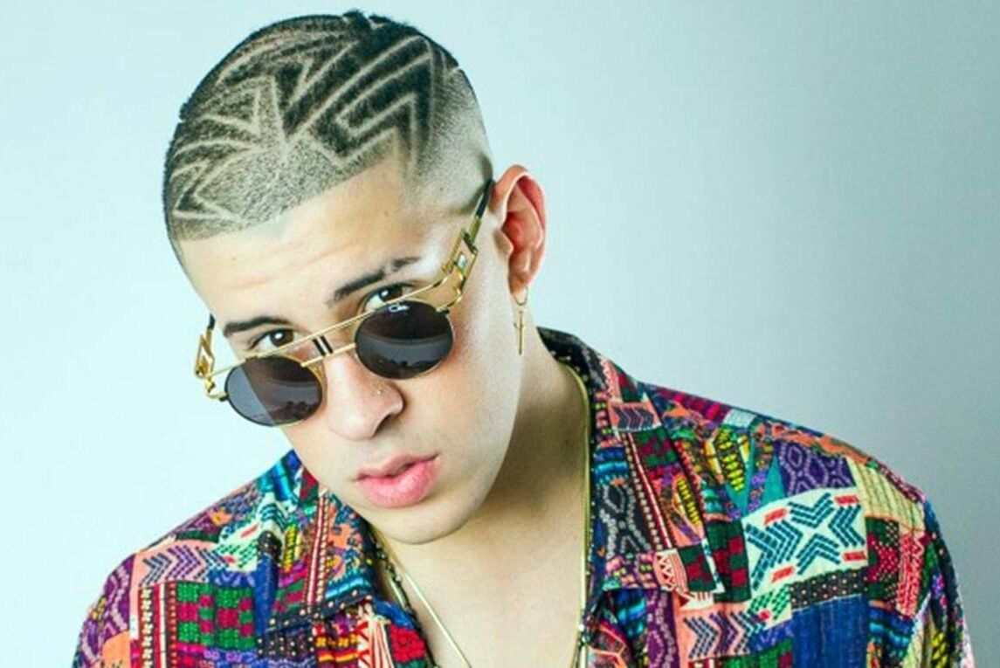
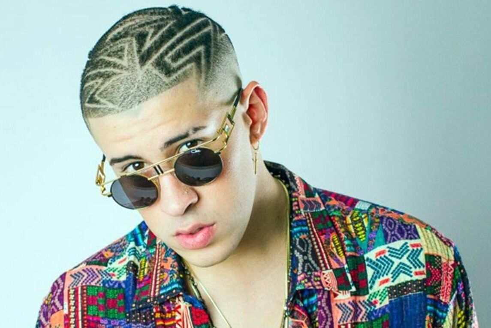

Bad bunny es un artista del genero (trap)el cual comenzo su carrera en 2016 y actualmente es reconocido por ser el top 5 mundialmente, tiene 7 discos en total de los cuales hablaremos mas tarde. Su nombre verdadero es Benito Antonio Martínez Ocasio y comenzo trabajando en un supermercado como empaquetador y en 2018 gano su primer Grammy Latino por mejor álbum de música urbana, momento en el cual entro en el top de mejores artistas del mundo
 

Actualmente bad bunny es uno de los artistas mas escuchados mundialmente, por ejemplo en Spotify esta en el top 10 de artistas mas ecuchados mundialmente,
con su último álbum Un Verano Sin Ti que se situa en el top 4 de los más escuchados en el mundo el cual
fue lanzado en el verano de 2022 depués de 1 año cuando lanzo su anterior disco.
En estos momentos Bad Bunny esta haciendo una gira por Latinoamerica y sus conciertos cuestan entre 80 y 200€ las entradas mas basicas.